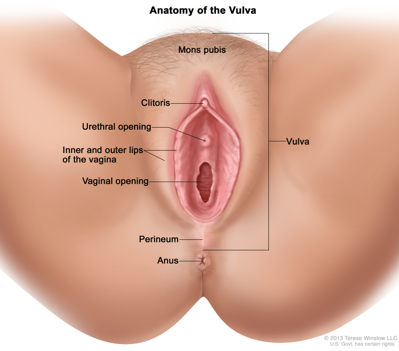

| Paciente | Linha | Motivo | Prioridade | Último atendimento | Ação sugerida | Situação |
|---|
| Profissional e escopo | Histórico | Modo TESTE | IA SOAP | Documentos/PDF | Protocolos | Gerenciar relatos | Admin |
|---|---|---|---|---|---|---|---|
| Carregando permissões... | |||||||
| Paciente | Tipo | Profissional | Unidade | Data | SOAP |
|---|---|---|---|---|---|
| Carregando... | |||||